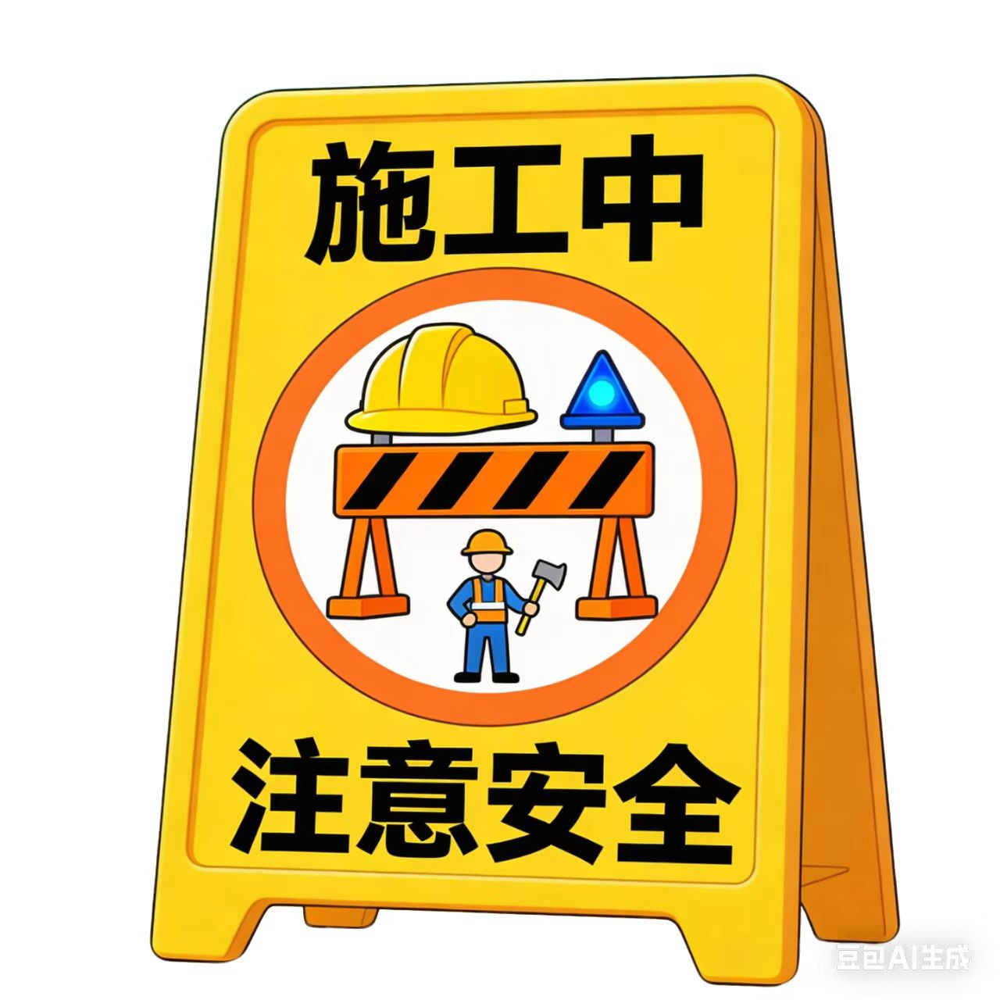

陈的制作 | web开发 | 全民制作人
人 物 简 介
科比·布莱恩特 （Kobe Bryant，1978-2020）是篮球史上最伟大的球员之一。他18岁从高中直接进入NBA， 整个职业生涯（1996-2016）都效力于洛杉矶湖人队， 以标志性的“曼巴精神”著称——追求极致、不知疲倦。
主要成就：5次NBA总冠军、 2次总决赛MVP、1次常规赛MVP、18次入选全明星。 他曾单场狂砍81分，在退役战轰下60分，完美谢幕。
退役后，他凭借动画短片 《亲爱的篮球》获得奥斯卡奖，在商业和文学领域同样才华横溢。2020年1月， 他因直升机意外离世，其二女儿吉安娜也在事故中遇难，全球为之哀悼。 他留下的不仅是无数荣耀，更是一种激励了无数人的精神信条。
努力赶工中
